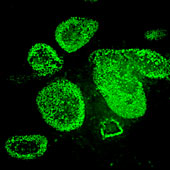
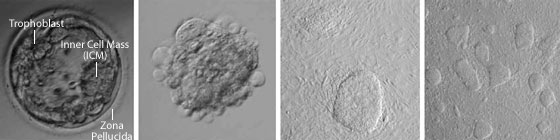

News Archives : 2004 : Collaboration Is Key to Stem Cell Line Development
by Charlie Schmidt
April 15, 2004
March 3, 2004 was a milestone for stem cell research. On that day, MCB Professor Doug Melton and his collaborators announced they had created 17 new human embryonic stem (ES) cell lines and made them freely available for research. The announcement, published in the online version of the New England Journal of Medicine, made headlines around the world and renewed the debate over how early life-stage embryos should be used in science. Private money had enabled Melton's team to sidestep federal restrictions on ES cell research. These restrictions allow public funds to be used only on a few cell lines registered by the National Institutes of Health (NIH).
The new contribution, described fully in the print version of the journal released on March 25, is significant on a number of levels. Most importantly, it expands access to human ES cells, which offer great medical promise. ES cells can develop into any type of cell in the body; the ultimate goal is to use them as stock material to make specialized cells such as neurons, or heart cells, which may provide treatments for disease. The new lines also shift the epicenter for ES cell research toward the private sector. Melton's team has doubled the number of human ES cell lines available in the United States. Any qualified investigator who wants to work with them can do so, albeit without U.S. government funding.
A Collaborative EffortThe story of how the new cells were derived is one of collaboration and shared expertise. Each participating scientist brought relevant experience to the table, but none had ever derived human ES cells from start to finish. "This was an example of how people with different backgrounds and motivations can work together very effectively," Melton says. "What we sought to do was create something that many people can use and share it with the broader research community."
Human ES colonies growing on mouse embryo fibroblasts (60X) |
|
MCB Professor Andy McMahon, one of Melton's long-term collaborators, shared his view. McMahon also feared that research performed with poorly characterized cells could lead to faulty conclusions, thereby producing broad negative impacts. "We decided that what we should do is generate a new group of cells that would be very well characterized," McMahon says. "And most importantly, we would make them available to anyone who wanted them, with no strings attached."
The question of where to obtain human embryos was solved during a chance encounter between Melton and Doug Powers, the scientific and laboratory director for Boston IVF, an in vitro fertilization clinic. At a social event, the two scientists struck up a conversation; Melton discussed his efforts to understand how stem cells make a pancreas. Both scientists agreed that more stem cells were needed for research. Powers then revealed that Boston IVF was going to discard thousands of frozen preimplantation embryos left over from couples' efforts to produce a pregnancy. When Melton suggested they collaborate by using the embryos to make stem cells, Powers readily agreed. Thus was borne a partnership between MCB and Boston IVF that was eventually funded by the Howard Hughes Medical Institute in November 2000. With additional funding from Harvard University and the Juvenile Diabetes Research Foundation, the project was set in motion.
A New LaboratoryWith financing secured, Melton and McMahon turned in early 2001 to the first task at hand: constructing a dedicated laboratory independent of links to publicly funded research. By this time, the research team had grown to include Irena Klimanskaya, a Ph.D-level researcher in Melton's laboratory, who brought experience with mouse ES cell culture systems and growth factors; and McMahon's wife and research partner, Jill McMahon, also experienced in mouse stem cell derivation.
Setting up the work space took the better part of a year. But by December, the equipment was ready, and Jill McMahon and Klimanskaya began to hone their techniques. Initial efforts were devoted to a host of preparatory tasks: devising experimental conditions, screening reagents, and preparing the feeder layers that nourish stem cells in culture. Mouse ES cells and a batch of federally approved human ES cells left over in Melton's laboratory were used to evaluate the feeders and other media components.
The Project Gets Underway
Human ES colonies growing on mouse embryo fibroblasts (100X) |
|
The first stage in the derivation process – thawing the embryos – was handled by the newest member of the research team: Jeannine Witmyer, a reproductive biologist with Boston IVF. The task of thawing is a delicate and challenging process. Frozen embryos are loaded with propane-diol, a cryo-protectant that freezes in an ordered crystalline formation (unlike water, whose ice crystals can flare out and rupture cell membranes). To thaw the embryos, the cryo-protectant is gradually exchanged with water. The procedure requires a careful touch – the cells can easily swell and burst, sending the researchers back to the drawing board.
Witmyer had two kinds of human embryos to work with: cleaved embryos, which are less developed masses of roughly four to eight cells each, and blastocysts, which are older, more tightly packed embryos with a greater cell number. Only blastocysts are appropriate for stem cell derivation. Thus, the cleaved embryos required a short period of culture to the blastocyst stage before attempts to harvest stem cells could be initiated.
For a variety of reasons, including the failure of an incubator, most of the embryos thawed during the first month died. It wasn't until April 2002 that a group of embryos survived to the next stage of derivation. In this step, known as immunosurgery, the blastocyst's outer cell layer, or trophoblast, is removed with the use of antibodies that attack the external cells, causing them to split open. The inner cell mass – which harbors stem cells – is then carefully extracted and placed on a feeder layer of mouse embryonic fibroblasts that provide nourishment and hopefully prevent the ES cells from differentiating (i.e., converting to a specialized cell).
At this point, the hard work really began in earnest – stem cells need constant supervision. Indeed, the project's remaining months were a long haul of late nights and working weekends. A contamination episode in several lines was a near disaster, saved by a fortuitous combination of antibiotics. Despite a broken wrist suffered in car crash, Jill McMahon came to the laboratory and "worked with her elbow," Klimanskaya recalls with a laugh. "You need to say goodbye to your vacation plans and your family plans," Klimanskaya says. "When the stem cells are growing, taking even one day off is a risk."
To augment the staff, Melton recruited another assistant: Jocelyn Atienza, a UCLA researcher with broad experience in tissue culturing. Atienza's participation was crucial – the derivation was picking up speed and moving towards the "passaging" stage through which the cell lines are divided and transferred to new culture dishes. Passaging is an art that requires careful attention to detail and a trained eye. Determining when to proceed is the most difficult part. "If you wait too long, the cells differentiate; if you do it prematurely they all die," explains Klimanskaya. "It really it depends on experience and what you actually see." One change that seemed to limit differentiation was the addition of plasmonate, a human blood component, which replaced fetal bovine serum in the culture media.
|  Human ES cells immuno-stained for Oct-4, a molecular marker of pluripotent stem cells (60X) |
|
The project's final months, coordinated primarily by Cowan and Atienza, were occupied with thawing and expanding frozen passages and characterizing their stem cell properties. The task of thawing the cells and growing them out was largely handled by Jake Zucker, a research assistant in Melton's laboratory. The goal, Cowan says, was to create up to 100 vials for each passage, with particular emphasis on the earlier passages, which are thought to be more viable. Thawing the passages did not go smoothly at first. But with trial and error, the team perfected the technique. "It became routine after a while," says Cowan. "The learning process was over and it came down to implementing the project on a larger scale." Today, most of the available cell lines are those that were expanded from passages 12 to 18. "We tried to shoot for less than 20," Cowan says.
A rigorous, full-scale characterization of all the cell lines, begun in June 2003, was the last step in the derivation process. With this procedure, the team ensured that each line had the requisite ES cell properties. Characterization occurred in multiple stages. First, the cells were checked for the appropriate stem cell molecular biomarkers. Then, small amounts of the cells were implanted under the skin of immune-compromised mice. In this in vivo environment, stem cells aggregate into benign tumors that, on close inspection, present a range of differentiated, specialized cells. The researchers look for all three cells comprising the three embryonic germ layers: neuron, muscle, and gut. "And if you don't find each of these three cell types, then the stem cells don't meet the appropriate criteria," Cowan says.
Looking ForwardThe project's great success was a welcome outcome. To what can it be attributed? Melton concedes he's not entirely sure, especially considering the stem cells were derived from frozen embryos – which had never been done before. Previously created cell lines are so poorly characterized that it's difficult to compare methods among them. A critical factor, Melton suggests, was the expertise of his research team, the team's commitment to the project, and painstaking attention to detail. Jill McMahon adds that Boston IVF encouraged a high level of scrutiny that was somewhat new to the Harvard team. "They have a very strict routine," she says. "Before you touch anything you check for temperature and humidity; they brought a level of detail that really changed the way we think about this."
Today, Melton and his MCB colleagues are busy fielding requests for the cells pouring in from around the world. There is talk about how to train investigators on how to use the cells, perhaps with videos or group classes. A new, multimillion-dollar Stem Cell Institute, to be launched at Harvard University on April 23, 2004, will provide ample opportunity for researchers to investigate new biomedical opportunities in cell therapy. And perhaps one day, stem cells generated by the combined efforts of MCB and Boston IVF will play a key role in curing some of humanity's most intractable illnesses.
|  | ||||||
| Human blastocyst embryo (day 5-6 after fertilization) |
Embryo during "Immunosurgery" |
ICM Outgrowth | Human Embryonic Stem Cell Colonies |
|||